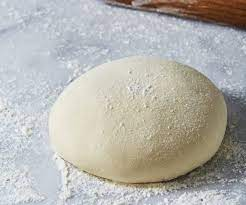

uleni sampai kalis (aku pake tangan) jangan takut jika adonanya lengket. lumuri tangan sesekali dg tepung (tapi jangan menambah tepung) uleni terus sampai adonan kalis.

kalisnya adonan canai tidak sekalis adonan roti ya, kira2 sepri ini sudah cukup